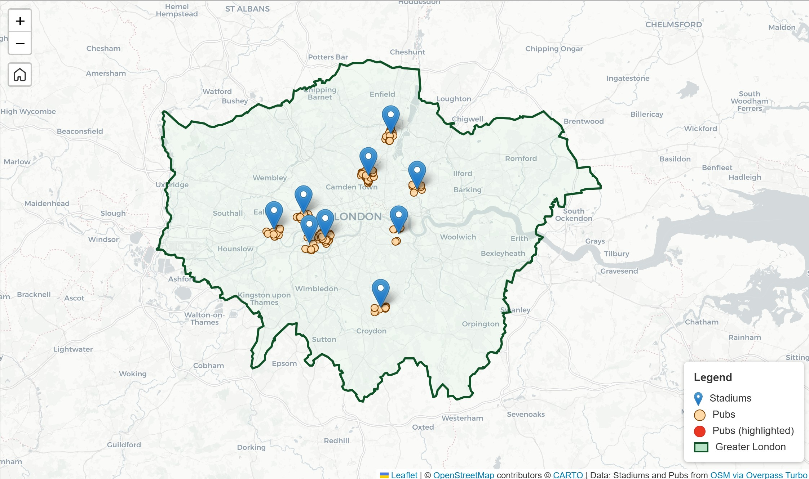

Stadiums & Closest Pubs – London
Interactive Web Map using Leaflet.js to map major football Stadiums and their nearest Pubs in London.

Project Description:
This project features an interactive web map built with Leaflet.js and HTML, mapping major football stadiums in London alongside pubs within a 1 km radius. Spatial data was sourced from OpenStreetMap (OSM) using Overpass Turbo.
Users can explore the city by selecting a stadium from the sidebar, which zooms into its location and highlights nearby pubs. Pubs are displayed as points showing their names as popups for easy identification.The sidebar lists club names, provides a clickable interface, and displays a summary of the pubs located nearby, offering a spatial overview and a focused search experience.
Team Members:
Joyson Estibeiro
Affiliation:
Personal Project
Team Members:
Joyson Estibeiro
Affiliation:
Personal Project